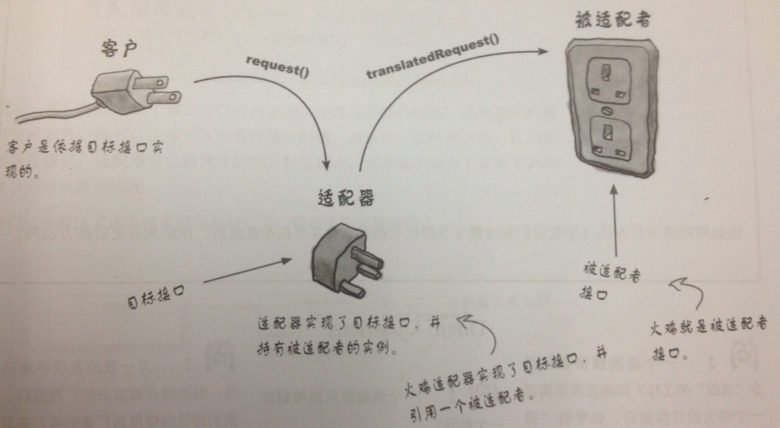

Adapter-适配器模式
适配器适合用于解决新旧系统（或新旧接口）之间的兼容问题，而不建议在一开始就直接使用
一、引子
如何将一个旧的接口转换为新接口？

二、net/http包
HandleFunc
- HandleFunc
1 | // The HandlerFunc type is an adapter to allow the use of |
适配器模式，HandlerFunc把任何入参是(w ResponseWriter, r *Request)无出参的函数，适配成一个handler对象